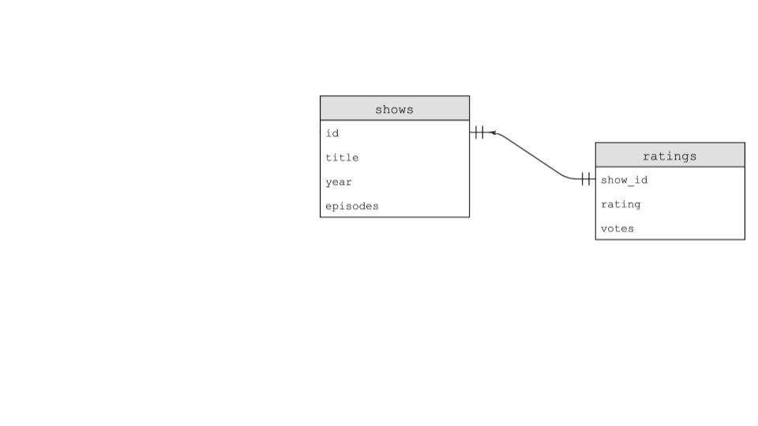

讲座 7
- 欢迎!
- Flat-File Database
- Relational 数据库
- SELECT
- INSERT
- DELETE
- UPDATE
- IMDb
JOINs- 索引es
- Using SQL in Python
- Race Conditions
- SQL Injection Attacks
- 总结
欢迎!
- 在上周，我们向你介绍了 Python，一种高级编程语言，它使用了我们在 C 语言中学到的相同构建块。然而，我们引入这种新语言并非仅仅为了学习“另一种语言”。相反，我们这样做是因为某些工具更适合某些工作，而对其他工作则不那么适用！
- 本周，我们将继续学习更多与 Python 相关的语法。
- 此外，我们还将把这些知识与数据整合起来。
- 最后，我们将讨论 SQL 或 结构化查询语言（Structured Query Language），这是一种领域特定的方式，通过它我们可以与数据交互并修改数据。
- 总的来说，这门课程的目标之一是学习如何编程——不仅仅是学习如何用这门课程中描述的语言编程。
Flat-File Database
- 正如你可能之前见过的，数据通常可以用列和行的模式来描述。
- 像 Microsoft Excel 和 Google Sheets 中创建的电子表格可以输出为
csv或 逗号分隔值（comma-separated values） 文件。 - 如果你查看一个
csv文件，你会注意到该文件是扁平的，因为我们所有的数据都存储在由文本文件表示的单个表中。我们将这种数据形式称为 平面文件数据库（flat-file database）。 - 所有数据逐行存储。每列由逗号或其他值分隔。
- Python 原生支持
csv文件。 - 首先，下载 favorites.csv 并将其上传到 cs50.dev 中的文件资源管理器。其次，查看此数据，注意第一行是特殊的，因为它定义了每一列。然后，每条记录逐行存储。
-
在你的终端窗口中，输入
code favorites.py并按如下方式编写代码：code favorites.pyand 并按如下方式编写代码：# Prints all favorites in CSV using csv.reader import csv # Open CSV file with open("favorites.csv", "r") as file: # Create reader reader = csv.reader(file) # Skip header row next(reader) # Iterate over CSV file, printing each favorite for row in reader: print(row[1])注意
csv库已被导入。此外，我们创建了一个reader，它将保存csv.reader(file)的结果。csv.reader函数从文件中读取每一行，在我们的代码中，我们将结果存储在reader中。因此，print(row[1])将打印favorites.csv文件中的语言。你可以在此下载此代码。 -
你可以按如下方式改进你的代码：
# Stores favorite in a variable import csv # Open CSV file with open("favorites.csv", "r") as file: # Create reader reader = csv.reader(file) # Skip header row next(reader) # Iterate over CSV file, printing each favorite for row in reader: favorite = row[1] print(favorite)注意
favorite被存储然后打印。另外，注意我们使用了next函数来跳转到 reader 的下一行。你可以在此下载此代码。 - 上述方法的缺点之一是我们信任
row[1]始终是 favorite。但是，如果列的顺序发生了变化会发生什么？ -
我们可以修复这个潜在问题。Python 还允许你通过列表的键进行索引。按如下方式修改你的代码：
# Prints all favorites in CSV using csv.DictReader import csv # Open CSV file with open("favorites.csv", "r") as file: # Create DictReader reader = csv.DictReader(file) # Iterate over CSV file, printing each favorite for row in reader: favorite = row["language"] print(favorite)注意这个例子直接在 print 语句中使用了
language键。favorite被赋值为row["language"]。你可以在此下载此代码。 -
这可以进一步简化为：
# Prints all favorites in CSV using csv.DictReader import csv # Open CSV file with open("favorites.csv", "r") as file: # Create DictReader reader = csv.DictReader(file) # Iterate over CSV file, printing each favorite for row in reader: print(row["language"])你可以在此下载此代码。
-
要计算
csv文件中表达的 favorite 语言数量，我们可以执行以下操作：csvfile。# Counts favorites using variables import csv # Open CSV file with open("favorites.csv", "r") as file: # Create DictReader reader = csv.DictReader(file) # Counts scratch, c, python = 0, 0, 0 # Iterate over CSV file, counting favorites for row in reader: favorite = row["language"] if favorite == "Scratch": scratch += 1 elif favorite == "C": c += 1 elif favorite == "Python": python += 1 # Print counts print(f"Scratch: {scratch}") print(f"C: {c}") print(f"Python: {python}")注意每种语言都使用
if语句进行计数。另外，请注意那些if语句中的双等号==。你可以在此下载此代码。 -
Python 允许我们使用字典来统计每种语言的
counts。考虑对我们代码的以下改进：# Counts favorites using dictionary import csv # Open CSV file with open("favorites.csv", "r") as file: # Create DictReader reader = csv.DictReader(file) # Counts counts = {} # Iterate over CSV file, counting favorites for row in reader: favorite = row["language"] if favorite in counts: counts[favorite] += 1 else: counts[favorite] = 1 # Print counts for favorite in counts: print(f"{favorite}: {counts[favorite]}")注意当键
favorite已经存在于counts中时，其值会递增。如果不存在，我们定义counts[favorite]并将其设置为 1。此外，格式化字符串已改进，以显示counts[favorite]。你可以在此下载此代码。 -
我们也可以利用
try和except来处理潜在的异常：tryandexcept来处理潜在的异常：# Uses try/except instead import csv # Open CSV file with open("favorites.csv", "r") as file: # Create DictReader reader = csv.DictReader(file) # Counts counts = {} # Iterate over CSV file, counting favorites for row in reader: favorite = row["language"] try: counts[favorite] += 1 except KeyError: counts[favorite] = 1 # Print counts for favorite in counts: print(f"{favorite}: {counts[favorite]}")注意
if和else已被替换为try和except。你可以在此下载此代码。 -
Python 还允许对
counts。按如下方式改进你的代码：# Sorts favorites by key import csv # Open CSV file with open("favorites.csv", "r") as file: # Create DictReader reader = csv.DictReader(file) # Counts counts = {} # Iterate over CSV file, counting favorites for row in reader: favorite = row["language"] if favorite in counts: counts[favorite] += 1 else: counts[favorite] = 1 # Print counts for favorite in sorted(counts): print(f"{favorite}: {counts[favorite]}")注意代码底部的
sorted(counts)。你可以在此下载此代码。 -
如果你查看 Python 文档中
sorted函数的参数，你会发现它有许多内置参数。你可以按如下方式利用其中一些内置参数：sorted函数的参数，你会发现它有许多内置参数。你可以按如下方式利用其中一些内置参数：# Sorts favorites by value using .get import csv # Open CSV file with open("favorites.csv", "r") as file: # Create DictReader reader = csv.DictReader(file) # Counts counts = {} # Iterate over CSV file, counting favorites for row in reader: favorite = row["language"] if favorite in counts: counts[favorite] += 1 else: counts[favorite] = 1 # Print counts for favorite in sorted(counts, key=counts.get, reverse=True): print(f"{favorite}: {counts[favorite]}")注意传递给
sorted的参数。key参数允许你告诉 Python 你希望用来排序项目的方法。在这种情况下，使用counts.get按值排序。reverse=True告诉sorted从大到小排序。你可以在此下载此代码。 - 你可以在 Python 文档中了解更多关于 sorted 的内容。
Relational 数据库
- Google、X 和 Meta 都使用关系型数据库来大规模存储他们的信息。
- 关系型数据库将数据以行和列的形式存储在称为 表（tables） 的结构中。
-
SQL 允许四种类型的命令：
Create Read Update Delete - 这四种操作被亲切地称为 CRUD。
- 我们可以使用 SQL 语法
CREATE TABLE table (column type, ...);创建一个数据库。但是你在哪里运行这个命令呢？ -
sqlite3是一种 SQL 数据库，具有本课程所需的核心功能。 - 我们可以在终端中输入
sqlite3 favorites.db来创建一个 SQL 数据库。在提示时，我们按y确认创建favorites.db。 - 你会注意到提示符不同了，因为我们现在正在使用一个名为
sqlite的程序。 - 我们可以通过输入
.mode csv将sqlite切换到csv模式。然后，我们可以通过输入.import favorites.csv favorites从csv文件导入数据。似乎什么都没发生！ - 我们可以输入
.schema来查看数据库的结构。 - 你可以使用语法
SELECT columns FROM table从表中读取项目。 - 例如，你可以输入
SELECT * FROM favorites;，这将打印favorites中的每一行。 - 你可以使用命令
SELECT language FROM favorites;获取数据的子集。 -
SQL 支持许多访问数据的命令，包括：
AVG COUNT DISTINCT LOWER MAX MIN UPPER - 例如，你可以输入
SELECT COUNT(*) FROM favorites;。此外，你可以输入SELECT DISTINCT language FROM favorites;来获取数据库中各个语言的列表。你甚至可以输入SELECT COUNT(DISTINCT language) FROM favorites;来获取它们的计数。 -
SQL 提供了我们可以在查询中使用的其他命令：
WHERE -- adding a Boolean expression to filter our data LIKE -- filtering responses more loosely ORDER BY -- ordering responses LIMIT -- limiting the number of responses GROUP BY -- grouping responses together注意我们使用
--在 SQL 中编写注释。
SELECT
- 例如，我们可以执行
SELECT COUNT(*) FROM favorites WHERE language = 'C';。会显示一个计数。 - 此外，我们可以输入
SELECT COUNT(*) FROM favorites WHERE language = 'C' AND problem = '你好，世界';。注意AND是如何用于缩小结果范围的。 - 类似地，我们可以执行
SELECT language, COUNT(*) FROM favorites GROUP BY language;。这将提供一个临时表，显示语言及其计数。 - 我们可以通过输入
SELECT language, COUNT(*) FROM favorites GROUP BY language ORDER BY COUNT(*);来改进这一点。这将按count对结果表进行排序。 - 同样地，我们可以执行
SELECT COUNT(*) FROM favorites WHERE language = 'C' AND (problem = '你好，世界' OR problem = 'Hello, It''s Me');。注意有两个''标记，以便在不混淆 SQL 的情况下使用单引号。 - 此外，我们可以执行
SELECT COUNT(*) FROM favorites WHERE language = 'C' AND problem LIKE 'Hello, %';查找所有以Hello,（包含一个空格）开头的 problem（问题）。 - 我们可以按如下方式对输出进行排序：
SELECT language, COUNT(*) FROM favorites GROUP BY language ORDER BY COUNT(*) DESC;。 - 我们甚至可以在查询中创建别名，就像变量一样：
SELECT language, COUNT(*) AS n FROM favorites GROUP BY language ORDER BY n DESC;。 - 最后，我们可以将输出限制为 1 个或更多值：
SELECT language, COUNT(*) AS n FROM favorites GROUP BY language ORDER BY n DESC LIMIT 1;。 - 注意，按照惯例，SQL 关键字通常用大写字母输入。
INSERT
- 我们也可以使用
INSERT INTO table (column...) VALUES(value, ...);的形式向 SQL 数据库中INSERT数据。 - 我们可以执行
INSERT INTO favorites (language, problem) VALUES ('SQL', 'Fiftyville');。 - 你可以通过执行
SELECT * FROM favorites;来验证此 favorite 是否已添加。
DELETE
-
DELETE允许你删除数据的一部分。例如，你可以DELETE FROM favorites WHERE Timestamp IS NULL;。这将删除Timestamp为NULL的任何记录。
UPDATE
- 我们也可以利用
UPDATE命令来更新你的数据。 - 例如，你可以执行
UPDATE favorites SET language = 'SQL', problem = 'Fiftyville';。这将导致更新所有行。 - 注意这些查询具有巨大的威力。因此，在现实环境中，你应该考虑谁有权执行某些命令，以及你是否有可用的备份！
IMDb
- 我们可以想象一个我们可能想要创建的数据库，用于编目各种电视节目。我们可以创建一个包含
title、star、star、star、star等更多 star 列的电子表格。这种方法的一个问题是会浪费大量空间。有些节目可能只有一个明星。其他节目可能有几十个。 - 我们可以将数据库分成多个表格。我们可以有一个
shows表、一个stars表和一个people表。在people表中，每个人可以有一个唯一的id。在shows表中，每个节目也可以有一个唯一的id。在第三个名为stars的表中，我们可以通过show_id和person_id将人物与节目关联起来。虽然这是一个改进，但这还不是一个理想的数据库。 -
IMDb 提供了一个包含人物、节目、编剧、明星、类型和评分的数据库。这些表之间的关系如下：

- 下载
shows.db后，你可以在终端窗口中执行sqlite3 shows.db。 -
让我们聚焦于数据库中
shows和ratings两个表之间的关系。这两个表之间的关系可以如下所示：
- 为了说明这些表之间的关系，我们可以执行以下命令：
SELECT * FROM ratings LIMIT 10;。检查输出后，我们可以执行SELECT * FROM shows LIMIT 10;。 - 检查
shows和ratings，我们可以看到它们具有一对一的关系：一个节目对应一个评分。 - 要了解数据库，在执行
.schema后，你不仅会看到每个表，还会看到每个表中的各个字段。 - 更具体地说，你可以执行
.schema shows来了解shows中的字段。你也可以执行.schema ratings来查看ratings中的字段。 - 对所有表的引用都存在于每个表中。在
shows表中，它简称为id。所有表中这个共同的字段称为 键（key）。主键（Primary keys）用于标识表中的唯一记录。外键（Foreign keys） 通过指向另一个表中的主键来构建表之间的关系。你可以在ratings的架构中看到show_id是一个引用shows中id的外键。 - 通过如上所述的方式将数据存储在关系型数据库中，数据可以更高效地存储。
-
在 sqlite 中，我们有五种数据类型，包括：
BLOB -- binary large objects that are groups of ones and zeros INTEGER -- an integer NUMERIC -- for numbers that are formatted specially like dates REAL -- like a float TEXT -- for strings and the like -
此外，可以设置列来添加特殊约束：
NOT NULL UNIQUE - 我们可以进一步处理这些数据以理解这些关系。执行
SELECT * FROM ratings;。有很多评分！ - 我们可以通过执行
SELECT show_id FROM ratings WHERE rating >= 6.0 LIMIT 10;进一步限制这些数据。从这个查询中，你可以看到展示了 10 个节目。然而，我们不知道每个show_id代表什么节目。 - 你可以通过执行
SELECT * FROM shows WHERE id = 626124;来发现这些是哪些节目 -
我们可以通过执行以下命令来优化我们的查询，使其更高效：
SELECT title FROM shows WHERE id IN ( SELECT show_id FROM ratings WHERE rating >= 6.0 LIMIT 10 );注意此查询将两个查询嵌套在一起。内部查询被外部查询使用。
JOINs
- 我们从
shows和ratings中提取数据。注意shows和ratings都有一个共同的id。 - 我们如何临时组合表？可以使用
JOIN命令将表连接在一起。 -
执行以下命令：
SELECT * FROM shows JOIN ratings ON shows.id = ratings.show_id WHERE rating >= 6.0 LIMIT 10;注意这会产生一个比我们之前见过的更宽的表。
-
前面的查询展示了这些键之间的 一对一 关系，现在让我们检查一些 一对多 关系。关注
genres表，执行以下命令：SELECT * FROM genres LIMIT 10;注意这让我们了解了原始数据。你可能会注意到一个节目有三个值。这是一对多关系。
- 我们可以通过输入
.schema genres来了解更多关于genres表的信息。 -
执行以下命令来了解数据库中各种喜剧的更多信息：
SELECT title FROM shows WHERE id IN ( SELECT show_id FROM genres WHERE genre = 'Comedy' LIMIT 10 );注意这将生成一个喜剧列表，包括 Catweazle。
-
我们可以通过连接各个表来了解更多关于 Catweazle 的信息：
SELECT * FROM shows JOIN genres ON shows.id = genres.show_id WHERE id = 63881;注意这会产生一个临时表。有一个重复的表是可以的。此外，注意 Catweazle（一个标题）被分配了 多个 类型，包括冒险、喜剧和家庭。
- 与一对一和一对多关系不同，还有 多对多 关系。例如，许多人可以出现在许多节目中！
-
我们可以通过执行以下命令来了解更多关于节目 The Office 及其演员的信息：
SELECT name FROM people WHERE id IN (SELECT person_id FROM stars WHERE show_id = (SELECT id FROM shows WHERE title = 'The Office' AND year = 2005));注意这会产生一个通过嵌套查询包含各种明星名字的表。
-
我们可以找到 Steve Carell 出演的所有节目：
SELECT title FROM shows WHERE id IN (SELECT show_id FROM stars WHERE person_id = (SELECT id FROM people WHERE name = 'Steve Carell'));这会生成一个包含 Steve Carell 出演的节目标题列表。
-
这可以用
JOIN表示为：JOINas:SELECT title FROM shows JOIN stars ON shows.id = stars.show_id JOIN people ON stars.person_id = people.id WHERE name = 'Steve Carell'; -
这也可以用这种方式表示：
SELECT title FROM shows, stars, people WHERE shows.id = stars.show_id AND people.id = stars.person_id AND name = 'Steve Carell'; - 通配符
%运算符可用于查找所有名字以Steve C开头的人，使用以下语法：SELECT * FROM people WHERE name LIKE 'Steve C%';。
索引es
- 虽然关系型数据库比使用
CSV文件更快且更健壮，但可以使用 索引（indexes） 来优化表内的数据。 - 索引可用于加速我们的查询。
- 我们可以通过在
sqlite3中执行.timer on来跟踪查询的速度。 - 要了解索引如何加快查询速度，请运行以下命令：
SELECT * FROM shows WHERE title = 'The Office';注意查询执行后显示的时间。 - 然后，我们可以使用语法
CREATE INDEX title_index ON shows (title);创建一个索引。这告诉sqlite3创建一个索引，并对title列执行一些特殊的底层优化。 -
这将创建一个称为 B Tree, 这种数据结构看起来类似于二叉树。然而，与二叉树不同，它可以有超过两个子节点。
-
此外，我们可以按如下方式创建索引：
CREATE INDEX name_index ON people (name); CREATE INDEX person_index ON stars (person_id); -
运行查询，你会注意到查询运行得更快了！
SELECT title FROM shows WHERE id IN (SELECT show_id FROM stars WHERE person_id = (SELECT id FROM people WHERE name = 'Steve Carell')); - 不幸的是，对所有列建立索引会占用更多的存储空间。因此，在速度提升方面存在权衡。
Using SQL in Python
-
为了在本课程中协助使用 SQL，可以在你的代码中按如下方式使用 CS50 库：
from cs50 import SQL - 类似于 CS50 库之前的用途，该库将协助处理在 Python 代码中使用 SQL 的复杂步骤。
- 你可以在文档中阅读更多关于 CS50 库 SQL 功能的信息。
- 利用我们的新知识，我们现在可以将 Python 与 SQL 结合使用。
-
按如下方式修改
favorites.py的代码：# Searches database for popularity of a problem from cs50 import SQL # Open database db = SQL("sqlite:///favorites.db") # Prompt user for favorite favorite = input("Favorite: ") # Search for title rows = db.execute("SELECT COUNT(*) AS n FROM favorites WHERE problem = ?", favorite) # Get first (and only) row row = rows[0] # Print popularity print(row["n"])注意
db = SQL("sqlite:///favorites.db")为 Python 提供了数据库文件的位置。然后，以rows开头的行利用db.execute执行 SQL 命令。实际上，此命令将引号内的语法传递给db.execute函数。我们可以使用此语法发出任何 SQL 命令。此外，注意rows以字典列表的形式返回。在这种情况下，只有一个结果（一行）以字典形式返回到 rows 列表中。你可以在此下载此代码。
Race Conditions
- 使用 SQL 有时会导致一些问题。
- 你可以想象多个用户同时访问同一数据库并执行命令的情况。
- 这可能导致代码被其他人的操作中断而产生故障。这可能导致数据丢失。
- 内置的 SQL 功能，如
BEGIN TRANSACTION、COMMIT和ROLLBACK，有助于避免一些竞争条件问题。
SQL Injection Attacks
- 现在，仍然考虑上面的代码，你可能想知道上面的
?问号是做什么的。在 SQL 的现实世界应用中可能出现的问题之一就是所谓的 注入攻击（injection attack）。注入攻击是指恶意行为者可能输入恶意的 SQL 代码。 -
例如，考虑如下所示的登录屏幕：
-
如果我们的代码中没有适当的保护措施，恶意行为者可能会运行恶意代码。考虑以下代码：
rows = db.execute("SELECT COUNT(*) FROM users WHERE username = ? AND password = ?", username, password)注意由于
?的存在，可以在username和password被查询盲目接受之前对其进行验证。 - 永远不要盲目相信用户的输入。
- 利用 CS50 库，该库将 净化（sanitize） 并移除任何潜在的恶意字符。
总结
在这节课中，你学习了更多与 Python 相关的语法。此外，你还学习了如何将这些知识以平面文件和关系型数据库的形式与数据整合。最后，你学习了 SQL。具体来说，我们讨论了……
- 平面文件数据库（Flat-file databases）
- 关系型数据库（Relational databases）
- SQL 命令，如
SELECT、CREATE、INSERT、DELETE和UPDATE。 - 主键和外键（Primary and foreign keys）
-
JOINs - 索引（Indexes）
- 在 Python 中使用 SQL（Using SQL in Python）
- 竞争条件（Race conditions）
- SQL 注入攻击（SQL injection attacks）
下次见！